Lecture 1 - Intro to Data Science Workflows
Contents
Lecture 1 - Intro to Data Science Workflows#
Lecture learning objectives#
By the end of the lecture, students should be able to:
List three useful tools for facilitating organization and collaboration in complex data analysis projects
Describe the data analysis cycle
Explain how to mechanistically start a data analysis project
State and refine a data analysis question
Why worry about workflows?#
Reason 1:#
It makes it easier to collaborate with your most imporant collaborator - YOU in 6 months!

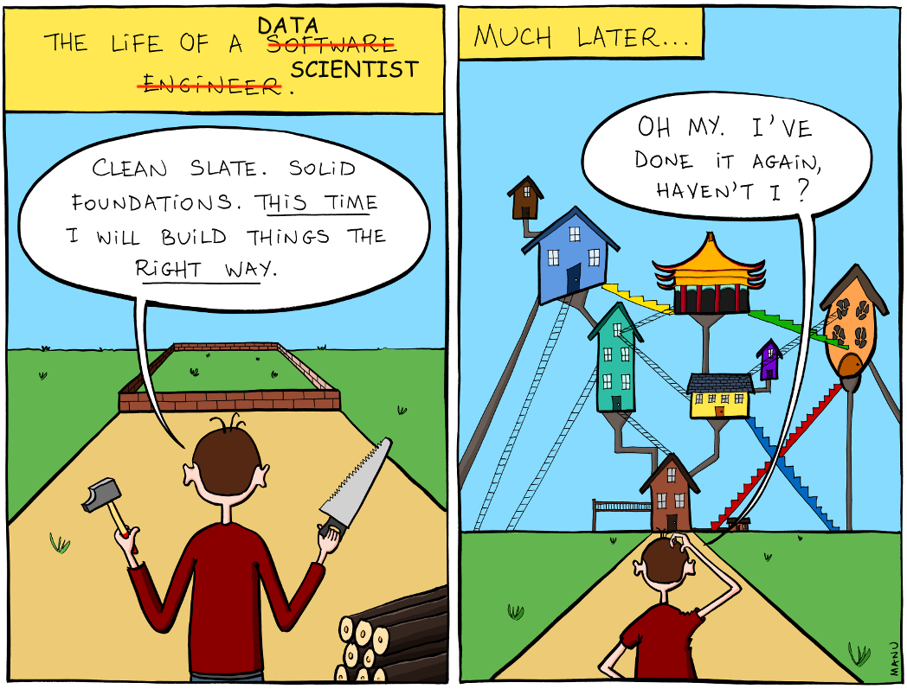
Source: http://www.bonkersworld.net/building-software/
Reason 2:#
It makes others think you know what you are doing…

Source: https://giphy.com/
Workflows & complex projects#
What are complex projects?#
I define complex projects as one that has at least one of the following:
two, or more, people directly working on the analysis
projects that involve two or more coding documents
projects that involve analysis of medium/large data
projects where you are working on a remote machine
projects that have many software or environment dependencies, or ones that are difficult or take a long time to install
As a project accumulates more of these features it grows further in complexity.
Complex projects without intentional Data Science workflows…#

– Relativity by Maurits Cornelis Escher
Concrete examples of problems that can occur in complex analyses#
An interesting result that you cannot recreate 😞
Your email inbox is full of information related to the project that only you have access too 😫
A small change to the analysis code requires re-running the entire thing, and takes hours… 😧
Activation time to becoming productive after taking a break from the project is hours to days 😴
Code that can only be run on one machine, and you don’t know why… 😵
How can we avoid such problems and chaos?#
Workflow features to mitigate chaos#
Version Control (Git & GitHub)
Executable analysis scripts & pipelines (Python/R scripts & Make)
Defined & shippable dependencies (Docker)
All of these features are a subset of those recommended by Hilary Parker in her 2016 Opinionated Analysis Development paper
1. Version Control#
Version control is a tool which archives changes to file(s) over time.
These changes are archived in a way that you can later revisit different time points in the project.

source: http://swcarpentry.github.io/git-novice/
Many version control tools also have features that facilitate collaboration.
Git + GitHub are two of the most common softwares for version control (and so this is where I draw my examples from)

Example problem solved by version control#
Problem: An extremely interesting result that you cannot recreate 😞
Solution: Version the code and the output of the analysis
Going back in time via commits#
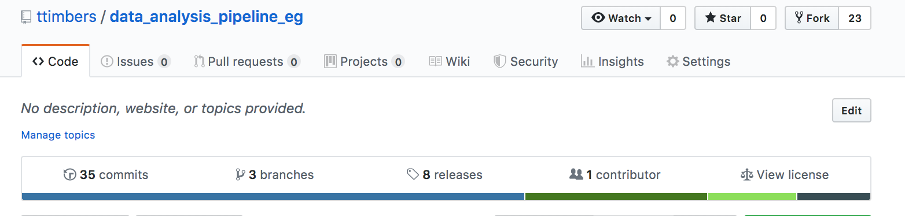
Going back in time via commits#
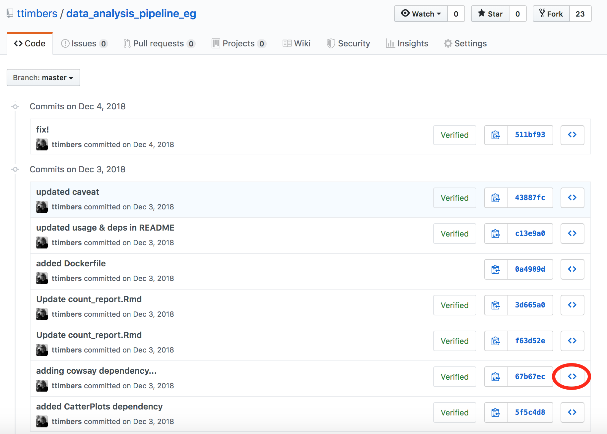
Going back in time via commits#
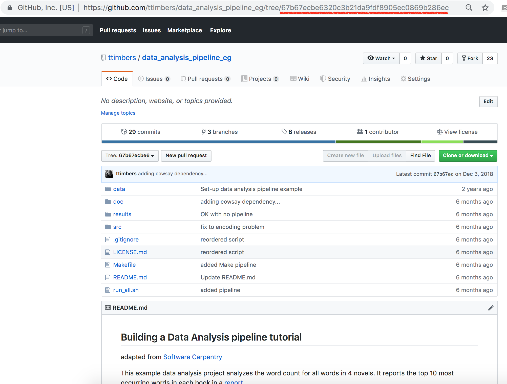
Going back in time via releases#
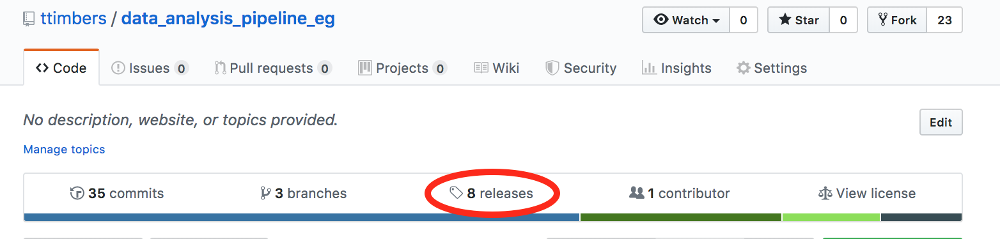
Going back in time via releases#
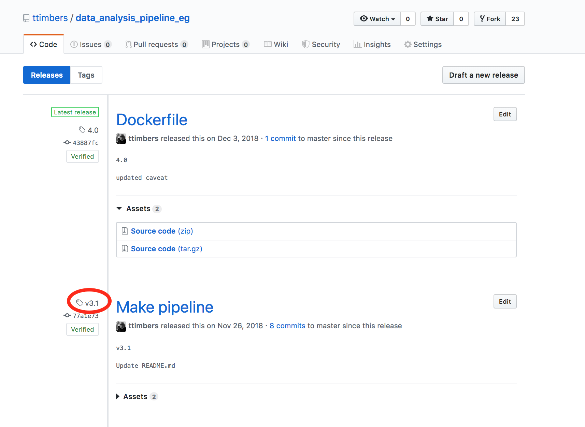
Going back in time via releases#
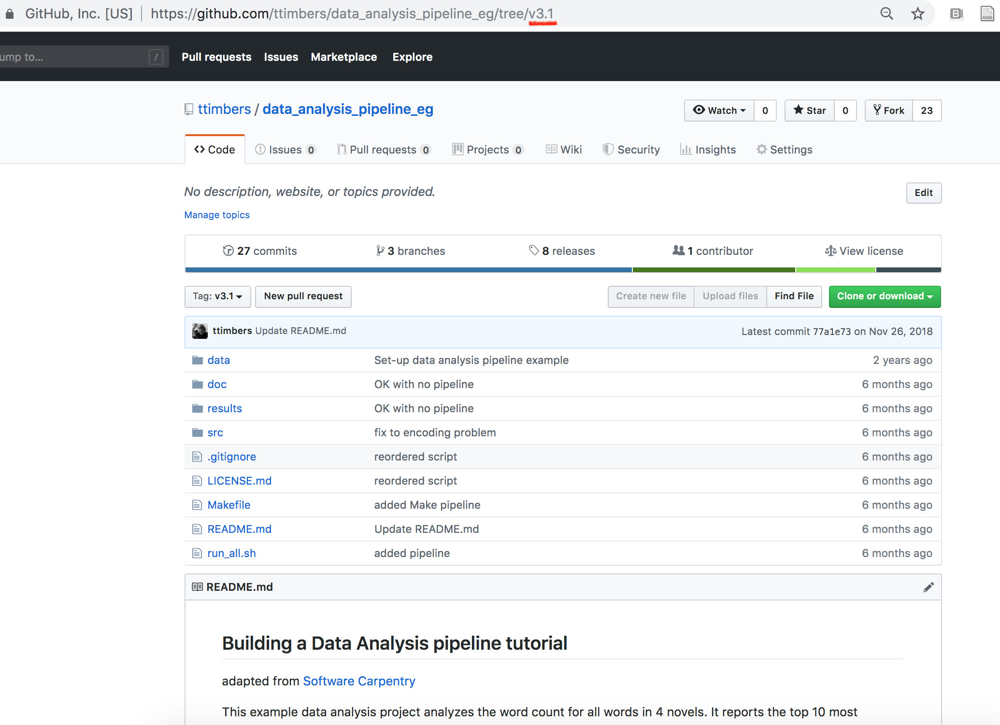
Example problem solved by version control#
Problem: Your email inbox is full of information related to the project that only you have access too 😫
Solution: Use GitHub Issues for communications related to the project
GitHub Issues for project-related communications#
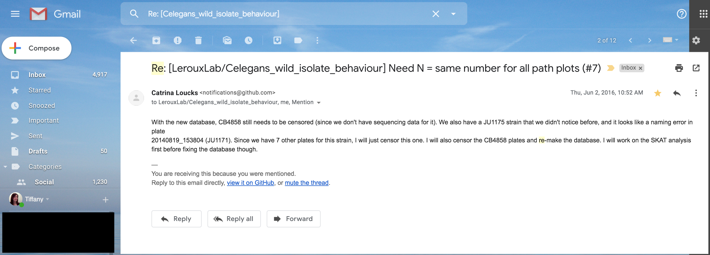
GitHub Issues for project-related communications#
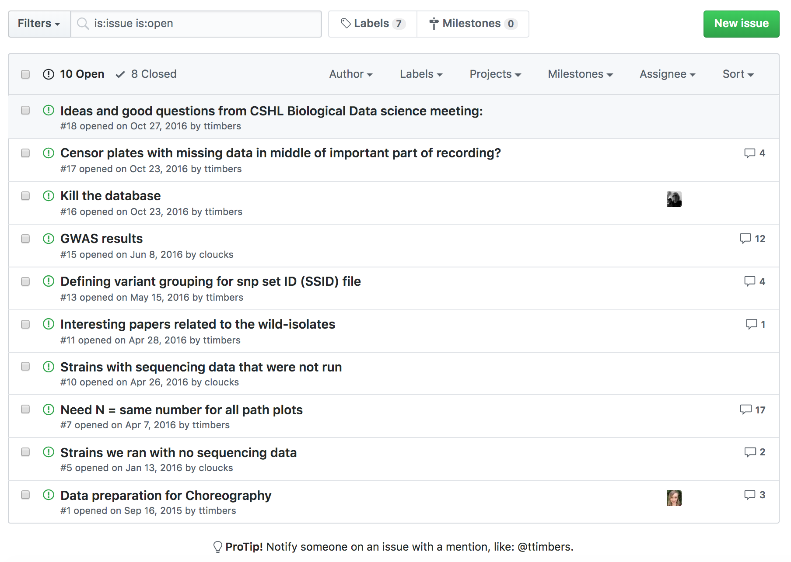
source: https://github.com/LerouxLab/Celegans_wild_isolate_behaviour/issues
GitHub Issues for project-related communications#
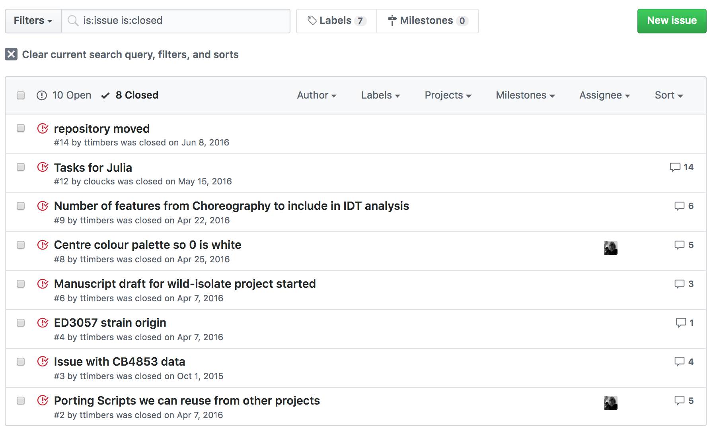
source: https://github.com/LerouxLab/Celegans_wild_isolate_behaviour/issues
Version control contributes to better communication & team work#
All collaborators/team members know where to find the latest (or earlier) version of the analysis (code and output)
All collaborators/team members have access to all communications associated with the analysis
2. Executable analysis scripts & pipelines#
As analysis grows in length and complexity, one literate code document generally is not enough
To improve code report readability (and code reproducibility and modularity) it is better to abstract at least parts of the code away (e.g, to scripts)
These scripts save figures and tables that will be imported into the final report

Example problem solved by executable analysis scripts & pipelines#
Problem: Activation time to becoming productive after taking a break from the project is hours to days 😴
Solution: Record the order scripts need to be run in, and their arguments in one “driver” script/pipeline file.
Create a recipe for your analysis#

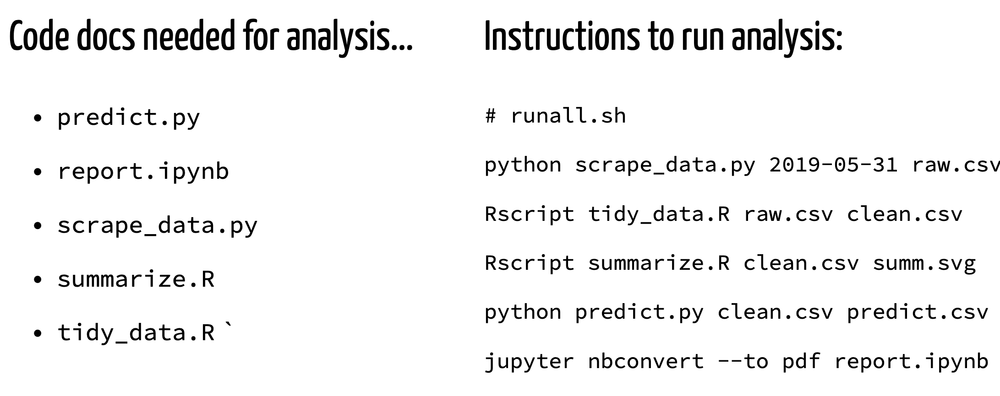
Example problem solved by executable analysis scripts & pipelines#
Problem: A small change to the analysis code requires re-running the entire thing, and takes hours… 😧
Solution: Use a smart dependency tree tool to only re-run the parts that needs to be updated.
Make - one possible smart dependency tree tool#
special file called a Makefile that contains the recipe for your analysis
Makefiles are “smart” and after changes, only run the parts of the analysis that has changed (as well as the parts that depend on the parts that changed)
Each block of code in a Makefile is called a rule, it looks something like this:
file_to_create.png : data_it_depends_on.dat script_it_depends_on.py
python script_it_depends_on.py data_it_depends_on.dat file_to_create.png
Makefiles are made of many rules, typically one rule for each time you run an analysis script
Make is not the only smart dependency tree tool - Apache Airflow, snakemake, Nextflow & drake are also great options!
Example Makefile:#
# run all analysis
all: doc/count_report.md
# make dat files
results/isles.dat: data/isles.txt src/wordcount.py
python src/wordcount.py data/isles.txt results/isles.dat
results/abyss.dat: data/abyss.txt src/wordcount.py
python src/wordcount.py data/abyss.txt results/abyss.dat
#create figures
results/figure/isles.png: results/isles.dat src/plotcount.py
python src/plotcount.py results/isles.dat results/figure/isles.png
results/figure/abyss.png: results/abyss.dat src/plotcount.py
python src/plotcount.py results/abyss.dat results/figure/abyss.png
# render report
doc/count_report.md: doc/count_report.Rmd results/figure/isles.png results/figure/abyss.png results/figure/last.png results/figure/sierra.png
Rscript -e "rmarkdown::render('doc/count_report.Rmd')"
Makefile dependency tree#
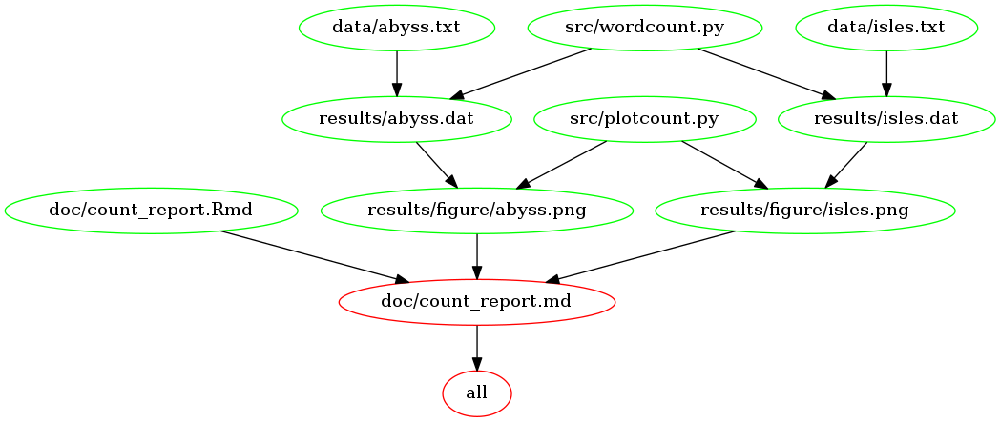
Executable analysis scripts & pipelines contribute to better collaboration#
Can be used by others to run/replicate the analysis
Makes it easier to understand the landscape of the project and for others to contribute
Reduces some of the challenges/frustrations of working with larger data sets
3. Defined & shippable dependencies#
Dependencies are other things one need to install to run your code, and includes:
programming languages (e.g., R, Python, Julia, etc)
packages from programming languates (e.g., tidyverse, scikit-learn)
other tools you rely on (e.g., Make)
legacy code (e.g., perl scripts, fortran, etc)
Dependencies include versions as well as names!
Example problem solved by defined & shippable dependencies#
Problem: Code that can only be run on one machine, you don’t know why… 😵
Problem: Long install times when setting up a remote machine for analysis 🙄
One possible solution: Containerizing your software and environmental dependencies
What are containers?#
Containers are like a light-weight virtual machine, they allow you to share:
Python/R versions
package versions
other tools you rely on (e.g., Make)
legacy code (e.g., perl scripts, fortran, etc)
The most popular tool for this is Docker
Containers can be shared on DockerHub (similar to how code can be shared on GitHub)
What are containers?#

source: Tools and techniques for computational reproducibility by Stephen R. Piccolo & Michael B. Frampton

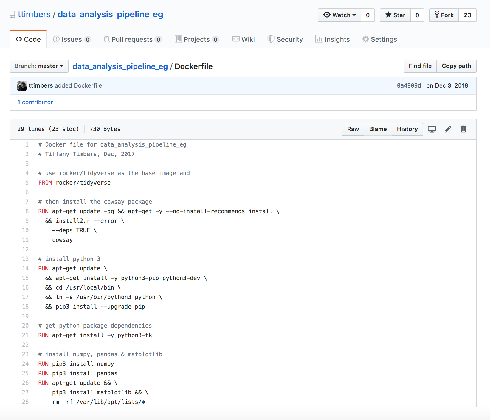
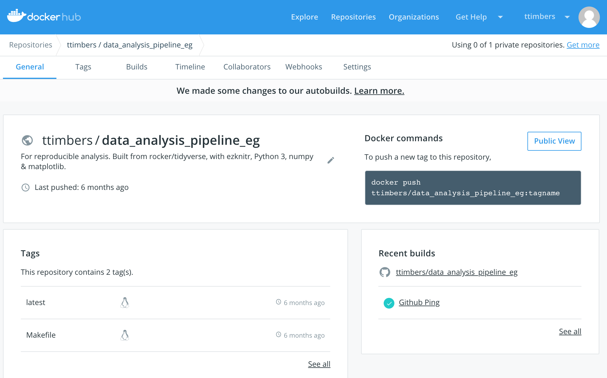
Instructions needed to run analysis on almost any machine:#
Install Docker
Clone or download this GitHub repository
From the root of the cloned repository, type:
docker run --rm -v $(pwd):/home/rstudio/data_analysis_eg \
ttimbers/data_analysis_pipeline_eg make -C /home/rstudio/data_analysis_eg all
Defined & shippable dependencies contribute to democratization of Data Science#
If you take care of packaging dependencies in a Docker container and distribute the container on DockerHub, you can add one line to your run instructions to your analysis to take away any installation pain your collaborators may face.
When to add these workflow features:#
Version Control
ALWAYS
Executable analysis scripts & pipelines
When you start hiding code chunks/cells in your Rmd/Jupter notebook
Defined & shippable dependencies
When doing remote computing or when you have tricky dependencies

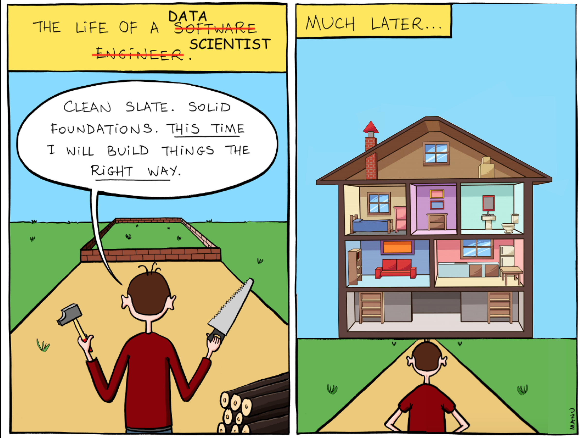
Life cycle of a data analysis project#
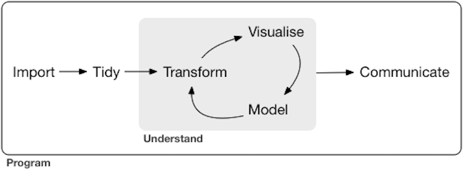
Source: R for Data Science by Grolemund & Wickham
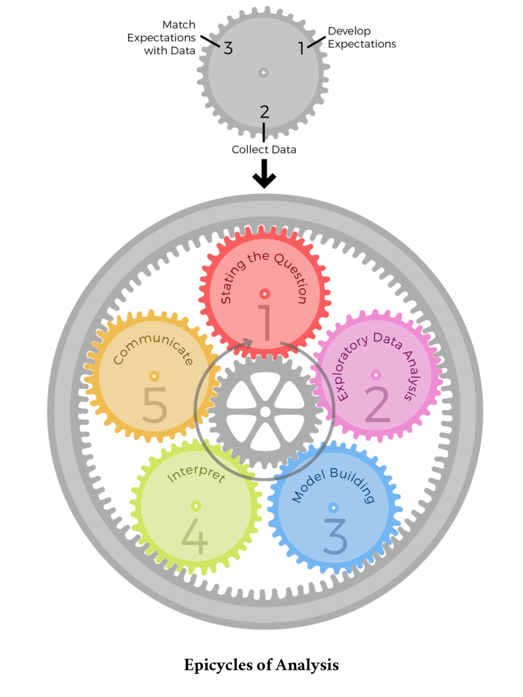
Source: Art of Data Science by Peng & Matsui
What’s next?#
why you should make your code flexible and modular
how to writing flexible scripts in R & Python that have command line arguments